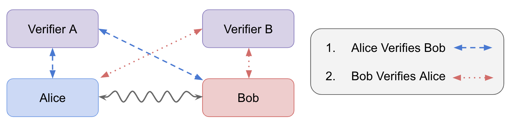

Device-Independent Handshake Protocol for Verifying Quantum Systems¶
Test the quantum capabilities of unknown devices.
This handshake protocol outlines a suite of tests to verify various quantum properties. The handshake is implemented by a verifier that wishes to verify an unknown device using a trusted device that is quantum enabled.
If successful, our device-independent tests verify a minimal set of quantum technologies required for common quantum network protocols such as the BB84 quantum key distribution protocol or quantum teleportation. Our test suite is able to verify:
- Dimension of a quantum channel.
- Qubit superposition preparation.
- Qubit incompatible measurments.
- Bipartite entanglement.
A successful handshake means that each quantum device can perform its advertised quantum properties and may be used to implement more sophisticated protocols such as quantum key distribution or teleportation.
Setting¶
We conisder a bipartite communication scenario involving two connected nodes in a quantum network. Each node has pre-established trust with a Verfier capable of performing a partial device-independent test. For convenience the test devices will be given labels Alice and Bob and their respective Verifiers will be labeled with "A" and "B" respectively.
Device Verification Handshake Protocol¶

Verifier A trusts device Alice and Verifier B trusts device Bob. Verifier A first uses its trust of Alice's quantum capabilities to certify Bob's quantum capabilities. Then Verifier B uses their trust of device B to certify Alice's quantum capabilities. If Alice and Bob verify each other to be quantum, then the handshake is successful and Alice and Bob may begin running more sophisticated quantum protocols.
A Verifier tests Alice and Bob by running quantum protocols with measurement statistics designed to distinguish quantum systems from classical. The wavy line connecting Alice and Bob represents the quantum protocol they run to pass tests verify quantum capabilities.
The described device independent tests can pass in two ways:
- Alice and Bob are both quantum-enabled and performed the task using quantum technology.
- Alice and Bob are conspiring to simulate quantum behavior without implementing authentic quantum technology.
Assumptions¶
- Either Alice or Bob is trusted to perform their quantum tasks without error.
A device is trusted if it is known to faithfully implement quantum instructions and functionality. Additionally, a trusted device has no hidden correlations or communication channels with other devices. Such hidden correlations would compromise the sanctity of a device-indpenendent test.
Devices¶
A Device is a black-box containing classical or quantum-enabled hardware. The responsibilities of a device include:
- Executing classical networking protocols to coordinate with other devices.
- Faithfully performing instructions passed through classical inputs.
- Reliably reporting outcomes through classical outptus.
- Accurately reporting its own quantum abilities and error rates.
In practice, quantum devices could use different qubit implementations. It is important for a device to be able publicly share its communication medium. A quantum-enabled device may have various quantum abilities for example,
- Preparing superposition qubit states for quantum communication.
- Performing incompatible measurements on qubit states.
- Generating ebits or entangled 2-qubit states.
Verifiers¶
A Verifier is a classical device that referees device-independent tests. The Verifier's responsibilities include:
- Dispatching instructions to test devices.
- Analyzing outcome statistics to determine quantum properties.
The dispatched instructions can be understood as quantum circuits to be run on the independent test devices. While running the device independent test, the instructions are drawn randomly froma finite set of possible circuits. The dispatched instructions can be considered inputs x and y within the black-box theory of device independent tests. The Verifier dispatches independent instructions to Alice and Bob and due to the randomness, Alice and Bob are unable to guess the others instruction with any uncertainty. Furthermore, test devices Alice and Bob are not required to know which test they are performing as the Verifier manages the test and the instructions which must be run.
Tests¶
Dimensionality¶
Classical Dimension¶
Objective: verify the minimal dimension, d, of the quantum communication hilbert space.
Setting: Alice receives an input x\in\{0,1,\dots,(N-1) \} and Bob has an output b\in\{0,1,\dots,(N-1)\}. N is the hilbert space dimension which is being tested, e.g. N=2 for qubit classical dimension test. Input instructions x are drawn from a uniform random distribution.
Protocol:
- Alice receives input instructions x which encode x into computational basis states on a d-dimension hilbert space.
- Alice sends the prepared computational basis state to Bob.
- Bob measures the state in the computational basis and outputs the result to the Verifier.
The Verifier computes the success probability of the test p_{\text{succ}} = \frac{1}{N} \sum_{x=0}^{N-1} p(b=x|x). The success probability is bounded by the hilber space dimension d, that is, 1 \geq \frac{d}{N} \geq p_{\text{succ}} \geq 0. Therefore, the test passes when p_{\text{succ}} = 1 because d=N with certainty. Otherwise, the test will fail because the hilbert space dimension is not large enough to encode each input into an orthogonal state, \frac{d}{N} \geq p_{\text{succ}}.
The test identifies the hilbert space dimension d of a quantum state by running the test with N=d. If the test passes, the hilbert space must have N dimensions and therefore \log_2(N)-qubits.
Superposition & Measurement Incompatibility¶
Single-Qubit Bell Violation¶
Objective: verify the ability to prepare a superposition state on a qubit and perform incompatible measurments on the qubit state.
Setting: Alice receives an input x\in\{0,1,2,3\}, Bob receives an input y\in\{0,1\}, and Bob outputs b\in \{0,1 \}.
Protocol:
- Alice receives input x and encodes it into the BB84 qubit states \{|0\rangle, |1\rangle, |+\rangle,|-\rangle\}.
- Alice sends the qubit to Bob.
- Bob measures with similar projective measurements rotated about the y-axis by a Bloch angle of \pi/4.
- If y=0, Bob measures with \{R_y(\frac{\pi}{4})|0\rangle, R_y(\frac{\pi}{4})|1\rangle\}
- If y=1, Bob measures with \{R_y(\frac{\pi}{4})|+\rangle, R_y(\frac{\pi}{4})|-\rangle \}
- Bob outputs measurement result b to the Verifier.
Success Requirement: Violation of single-qubit Bell inequaltiy.
The test passes if Alice and Bob's statistics violate the Bell inequality described in the Measurement Incompatibility Theory section. The optimal classical score of the single-qubit Bell violation is 6, however, quantum mechanics can achieve 6.828 if they employ the described procedure.
Since this test uses a Bell violation, it can be run in an ideal device-independent setting. If the assumption that only 1-qubit is sent between Alice and Bob holds, the Verifier does not need to trust Alice or Bob to determine that the system is quantum.
Entanglement¶
CHSH Bell Violation¶
Objective: verify bipartite entanglement between two devices.
Setting: Alice and Bob share a maximally entangled state and have no communication throughout a round of the test. The Verifier distributes input instructions x \in \{0,1\} to Alice and y\in\{0,1\} to Bob, who responds with classical outputs a\in\{0,1\} and b\in\{0,1\}.
Protocol:
- Devices Alice and Bob receive measurement instructions x,y \in \{0,1\}.
- They perform the prescribed measurement on their shared entangled state.
- They report the binary measurement outcome to the Verifier a,b\in \{0,1\}
Success Requirements: Violation of bipartite CHSH Bell inequality.
The CHSH inequality bounds the classical correlation between the outputs of Alice and Bob. Quantum mechanics can violate the CHSH inequality by performing a set of incompatible measurements on entangled qubits. The best classical score is 2 while quantum mechanics can achieve 2\sqrt{2} against the CHSH inequality. If the no-signaling condition can be proven true, the Bell violation can be used as an ideal device-independent test to verify the presence of quantum technology in two unknown devices.
Verifying the IBM Quantum Computer¶
We have prototyped the device verification test suite on the IBM quantum computer. The results are reported in the Qiskit Examples page of this website. Our tests should be considered simulations of bipartite quantum communication scenarios, not legitimate verification of quantum behavior. The reason being that Alice and Bob's instructions are executed as part of the same circuit on the same device. This enables classical simulation to suffice for passing the tests as demonstrated by the the Qiskit simulator.
As an implementation note, the tests on the IBM quantum computer were not run with random inputs. In a real-world scenario, this might allow a classical device to improve its success against a quantum test. However, we trust that the IBM quantum computers faithfully execute their instructions for each shot independently from previous shots. Therefore, randomizing the inputs should not have a meaningful effect on the test performance.
Security¶
Potential Exploits¶
Our test suite could be exploited by classical simulations of quantum mechanics. The objective of the attacker might be to verify itself as quantum so that it becomes trusted to implement quantum cryptographic protocols with other devices. From this point, an attacker might be able to steal information being transmitted by authentic quantum devices. An unknown device Bob could implement this attack in the following manner:
- Bob intercepts all messages from Verifier A to Alice.
- Bob uses the knowledge of all input instructions coming from Verifier A.
- Bob uses knowledge of the inputs to simulate the statistics signature of the implemented test.
- Verfier A does not know that device Alice has been compromised and trusts Bob as a quantum-enabled device.
Now that Verifier A trusts Bob as a quantum device, it may use Bob for cryptographic protocols such as key distribution. It is a simple task for Bob to continue simulating quantum protocols while copying all the classical information being passed.
Such an attack is the exact reason why trust needs to be established between Alice and Verifier A (or Bob and Verifier B). This exploit can be negated by employing an ideal device independent test. This would require physicsal limitations to be placed on the amount of communication between Alice and Bob. For example, a CHSH violation requires that Alice and Bob do not communicate. This restriction can be met provided that Alice and Bob are separated by distances a large distance such that light cannot travel from one device to other within the scope of the test. Likewise, the single-qubit Bell violation used for our measurement incompatibility test requires that no more than one bit or qubit is shared between Alice and Bob. For an ideal device-independent implementation, the test could be performed at high-frequency baud rates such that the channels are operating at their maximum capacity. At high-frequency operation, it would be difficult to perform a classical simulation without sophisticated high-precision classical communication hardware.
Classical Network Security¶
The classical network communications used for coordinating tests between quantum devices should use state-of-the-art security standards for authenticating and securing communication with remote parties. The developed test suite does not guarantee security, however, it helps verify that more sophisticated cryptographic protocols may be implemented.